Growth Audit · November 2026
Five ideas to turn more home cooks into Premium subscribers. Each one built into a first run of your own app, from the first search to Premium, so you can tap through it.
Why you’re seeing this
Adapty runs subscriptions for more than 30,000 apps, so we see which onboarding and paywall changes lift revenue across the whole market, not just inside one app.
We pointed that at Cookpad. We took your own screens, copy and prices from your App Store listing and cookpad.com/us, and built the path from install to Premium around the five ideas with the most potential. We had no recording of your app, so every screen is a proposal in your design, not a copy of today’s flow.
We’re not proposing to rebuild every screen. These are the changes with the highest potential, ranked by what we’d test first.
Every colour, control and price in the prototype is Cookpad’s. We changed the order and what gets shown.
We work from the outside, so we can’t see your live flow or your test history. If you’ve already run one of these, tell us and we’ll go deeper on the rest.
The shortlist
Potential outcome, based on Adapty data
The prototype
Tap through it like a new user, or jump straight to an idea. Numbered chips mark the screens that carry one.
Search by ingredient or by dish across thousands of recipes from home cooks, verified by the people who cooked them.
Ad-Free Browsing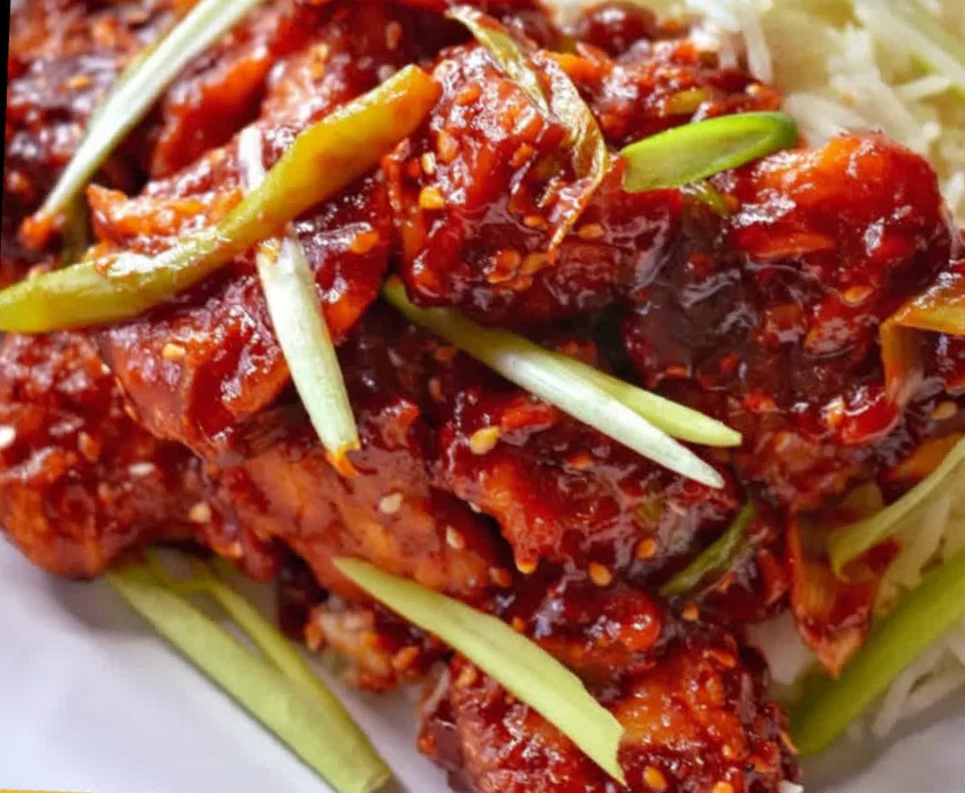
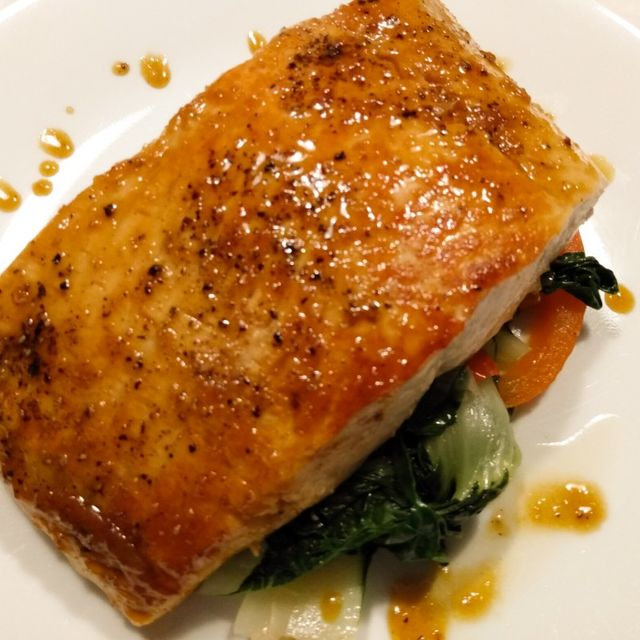
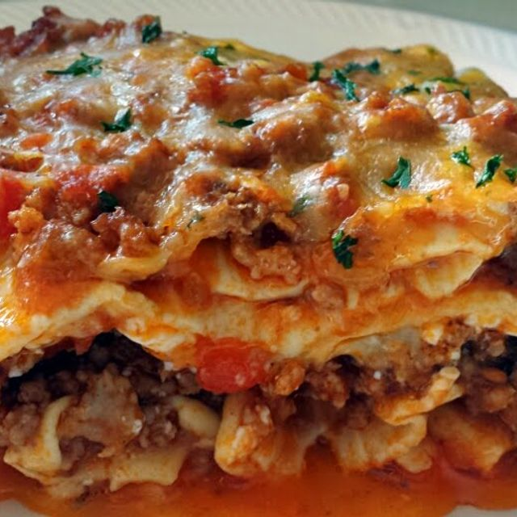
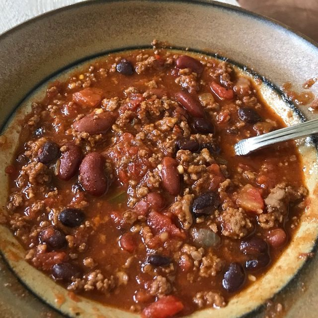
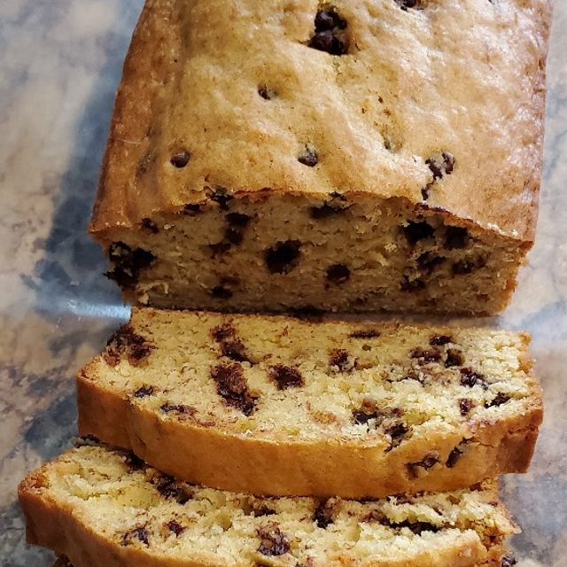
“you can search an ingredient and it’ll find recipes using that ingredient.”
No account needed to look around.
We’ll start your first search there. Recipes come first; no sign-up to see them.
Recipes from home cooks in the US and around the world, translated automatically.
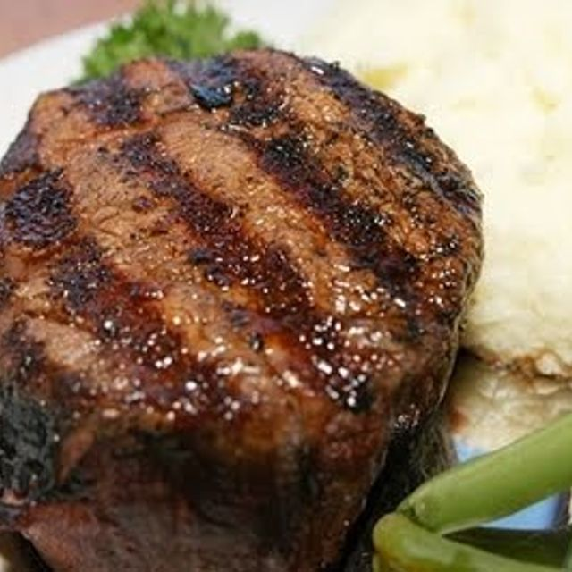
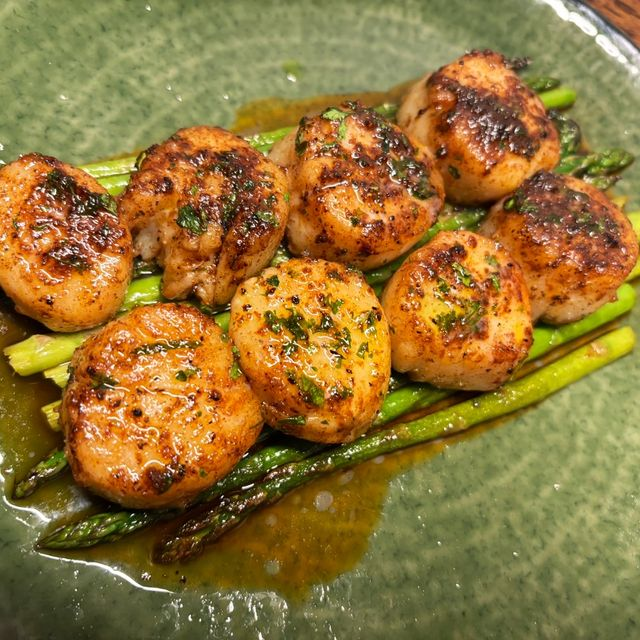
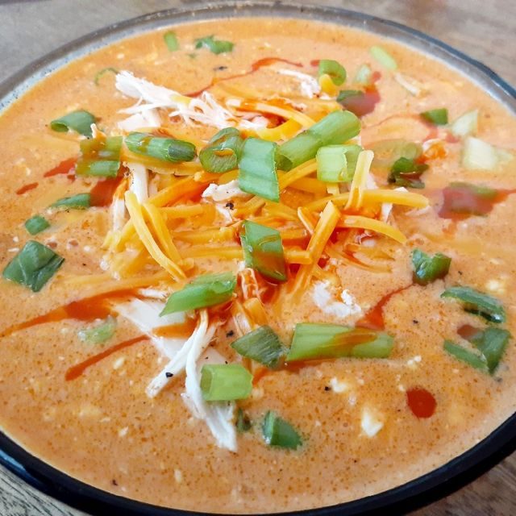
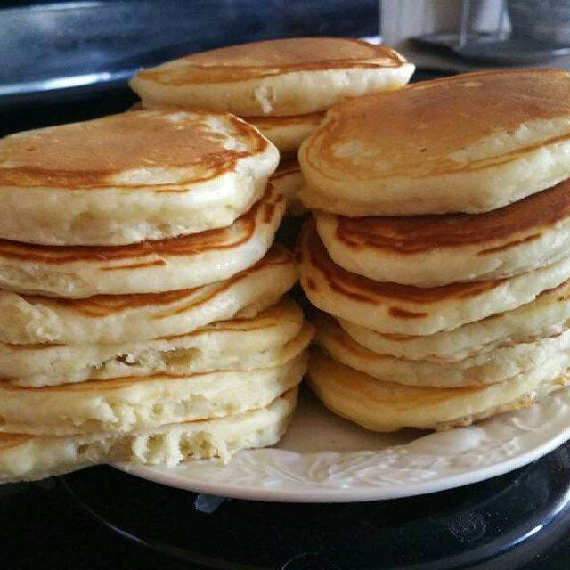
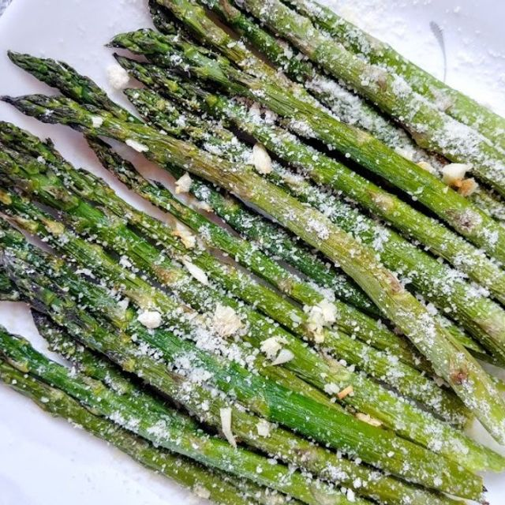
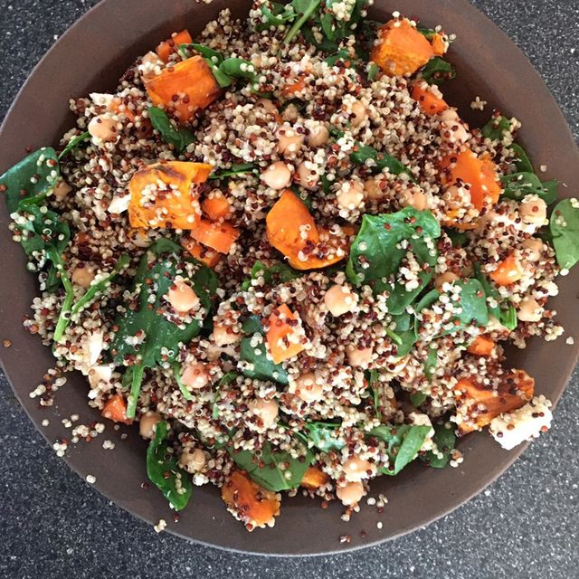
Newest first · free to open, save and cook
Succulent spicy bites of glazed chicken. Perfect served on rice.A pot that feeds everyone, better the next day.Three ingredients and the pasta water. Done in 15 minutes.This Air Fryer Basque Burnt Cake is smooth and creamy. It is also ridiculously easy!
A free account keeps every recipe you save, on your phone and on the web.
Your saved recipes stay private until you choose to share them.
“There’s almost no recipe you CAN’T find on Cookpad.”
RestoreTermsPrivacy
Your recipe is saved. Bring in the ones you’ve found elsewhere too, ingredients and steps separated, ready to follow.
Import this recipe?
Saved as a recipe only visible to you
5 of 5 imports left this week
A proposal in your design: we haven’t seen your live flow, so it starts at first launch, not at an ad. Close the paywall with ✕ for idea 5.
Scan to open the prototype full screen, the way a new user would see it.